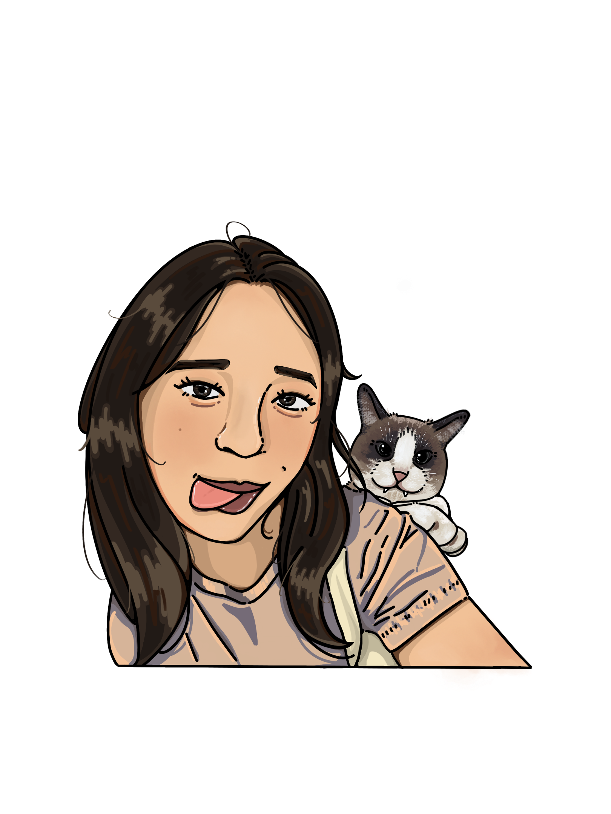

Meet Denah!

about me:
Hello everyone! My name is Denah Howpun and I’m a second year Visual Communication & Design major at San Francisco State University!
I was born in San Francisco but raised in the small town of Temecula and have lived there up until I moved to San Francisco for school.
Growing up, I’ve always been interested in art, whether it’s digital, traditional or painting with acrylics. I’ve gotten multiple rewards from the different art competitions I’ve participated in during school and even had my art showcased in public throughout middle school!
During my senior year of highschool, I developed an interest in computers and how things were coded which led to a passion in Computer Science!
Although I enjoyed coding and watching my hard work come to life, it was something that I couldn’t see myself pursuing in the future, especially with how tedious coding was which led me to change majors.
Now that I’m a Vis Comm major, my passion for art and design grew!
I’m currently not set on what I specifically want to do in the future, but I’ll gladly accept anything design related that comes my way!
I love drawing, especially with blue ball point pens and making my own press on nails! A few fun facts about me are:
- My birthday is 05/05/2005, making me a Taurus!
- I have a black belt in karate
- My favorite Pokemon of all time is Torchic
- I have a cat named Kambucha who’s my pride and joy
- I have 500+ wins on imessage WordHunt
My favorite games of all time are Minecraft and Stardew Valley with Roblox as a close runner up!
I love watching anime, but only when they’re finished and I know I can binge them in one sitting.
My parents are both Thai and speak fluently in the language, but I can only understand it and speak very little of it.
I also know American Sign Language and can read Arabic, but I also have no idea what I’m reading.